在上一个视频中，你了解了什么是无监督学习，以及一种称为聚类的无监督学习类型。00:02
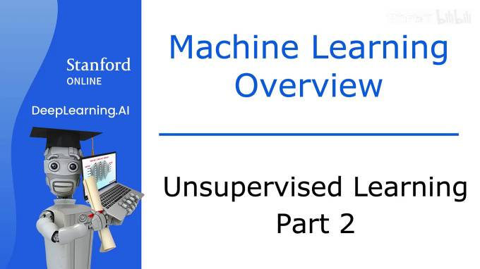
让我们给出一个稍微更正式的无监督学习定义，并快速了解除聚类之外的其他一些无监督学习类型。00:10
在监督学习中，数据同时包含输入 X 和输出标签 Y，而在无监督学习中，数据仅包含输入 X，不包含输出标签 Y。00:20
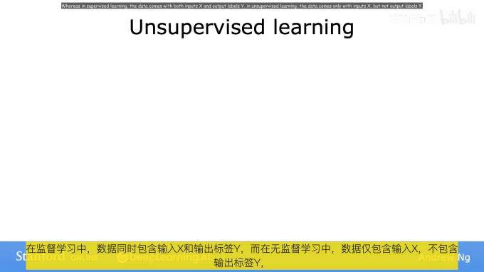
算法需要在数据中找到某种结构、某种模式或者某种有趣的东西。00:32
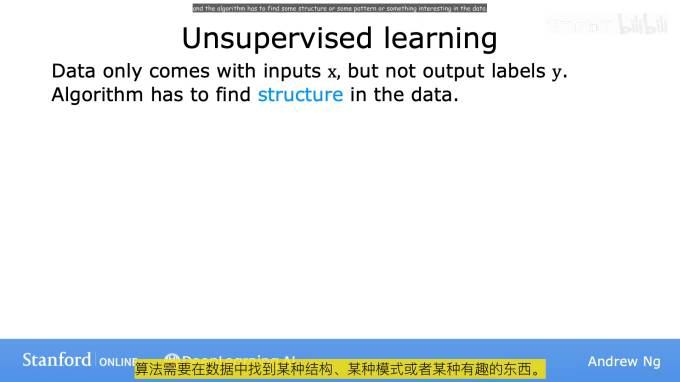
我们只看到了一个无监督学习的例子，称为聚类算法，它将相似的数据点分组在一起。00:39
在本专项课程中，你将学习聚类以及其他两种类型的无监督学习。00:48
一种称为异常检测，用于检测异常事件。00:55
事实证明，这对于金融系统中的欺诈检测非常重要，其中异常事件、异常交易可能是欺诈的迹象，并且该技术还适用于许多其他应用。01:02
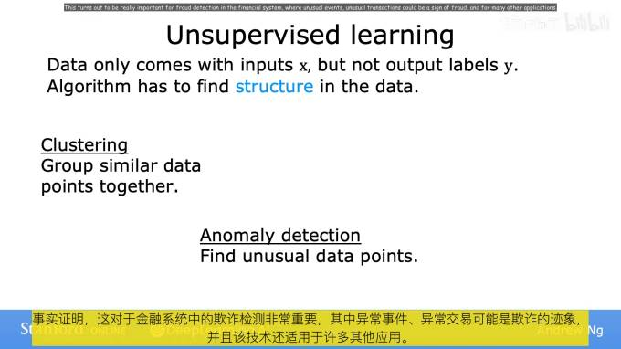
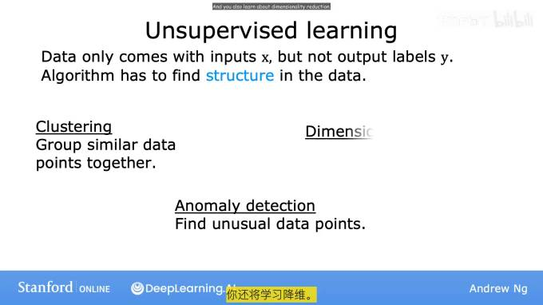
这让你能够获取一个大数据集，并几乎奇迹般地将其压缩成一个更小的数据集，同时尽可能少地丢失信息。01:19
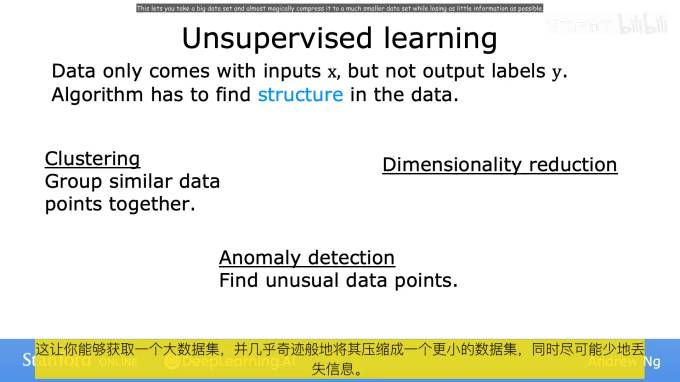
如果你觉得异常检测和降维暂时还不太容易理解，不用担心。01:31
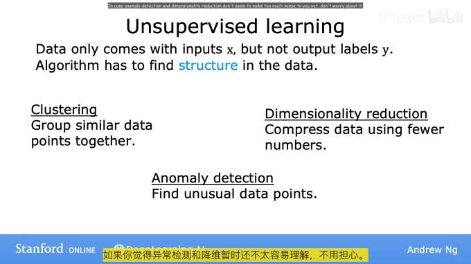
我们将在本专项课程的后面部分学习这些内容。01:38
现在，我想再问你一个问题，以帮助你检查理解程度。01:42
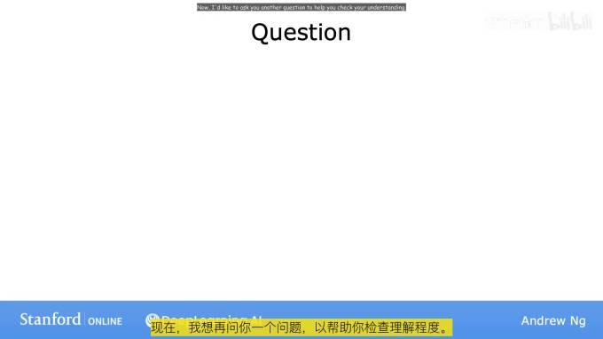
别紧张，如果你第一次没答对，完全没问题。01:49
请选出你认为属于无监督学习示例的所有选项。01:53
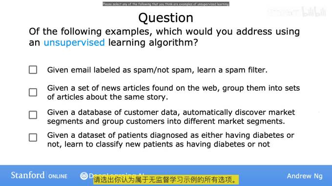
其中两个是无监督学习的例子，两个是监督学习的例子。01:59
也许你还记得垃圾邮件过滤问题。02:10
如果你有标记数据，即标记为垃圾邮件或非垃圾邮件的电子邮件，你可以将其视为一个监督学习问题。02:13
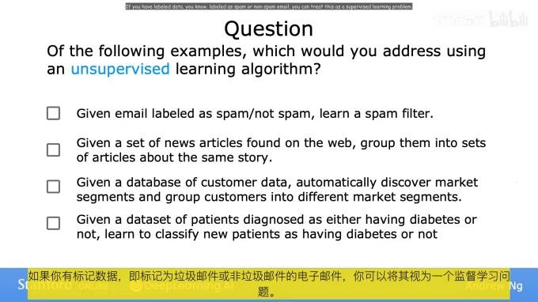
第二个例子，新闻报道的例子，正是你在上一个视频中看到的和熊猫的例子。02:23
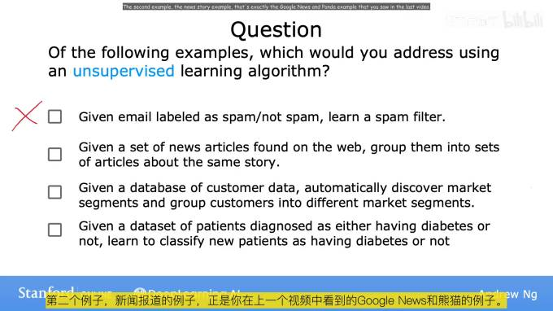
因此，你可以使用聚类算法来处理该问题，将新闻文章分组在一起。02:31
所以那会用到无监督学习。02:38
我之前稍微谈到的市场细分例子，你也可以将其作为一个无监督学习问题来处理，因为你可以给算法一些数据，让它自动发现市场细分。02:41
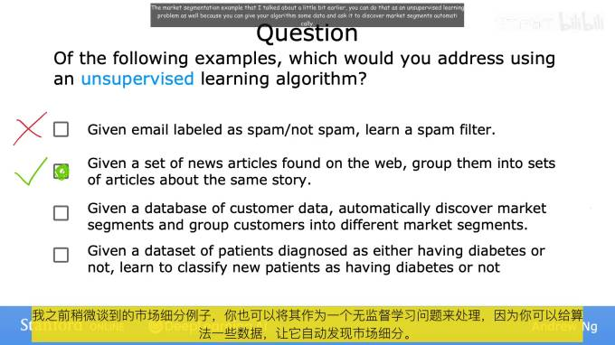
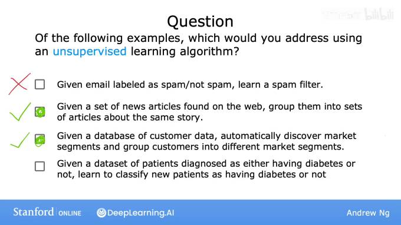
最后一个是关于诊断糖尿病的例子。02:56
实际上，这很像我们在监督学习视频中的乳腺癌例子。03:00
只是将良性或恶性肿瘤换成了患有糖尿病或未患糖尿病。03:06
因此，你可以像处理乳腺肿瘤分类问题一样，将其作为一个监督学习问题来处理。03:12
尽管在这个视频和上一个视频中，我们主要讨论了聚类，但在本专项课程的后续视频中，我们也将更深入地探讨异常检测和降维。03:21
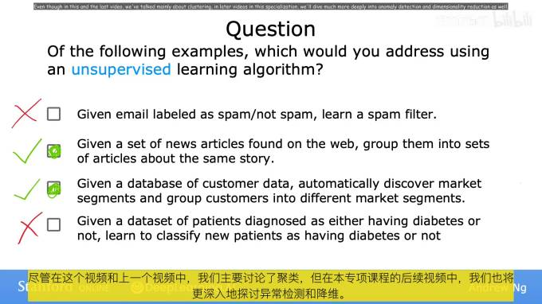
以上就是无监督学习的内容。03:35
在结束本部分之前，我想与你分享一件我觉得非常令人兴奋且有用的事情，那就是在机器学习中使用 Jupyter 笔记本。03:38
让我们在下一个视频中看看它。03:49